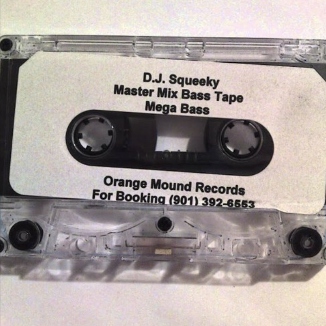
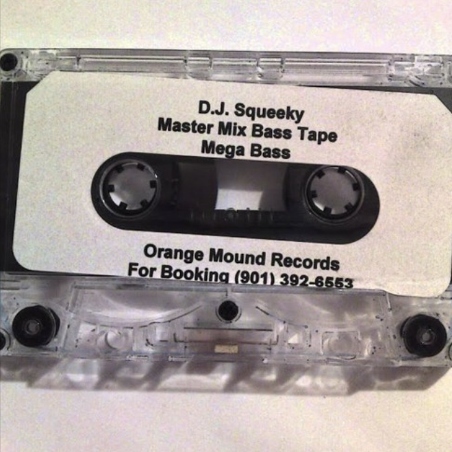

It was DJ Spanish Fly's dextrous fingers that first gave Memphis rap its shape. Fly, who DJed at the city's first club to play
rap, Club No Name, as well as No Name's successor Club Expo and the Crystal Palace Skate Rink, molded listeners' amorphous
preferences into something concrete: they liked electro, he gave them rap.
If Spanish Fly was a blunt catalyst for musical change, DJ Squeeky was the precision instrument. Squeeky's thundering,
rat-a-tat beats define the early era of Memphis rap.
DJ Zirk is one of the original Memphis gangsta rappers, who's lyrics were hardcore and to the point. However he worked
with everyone from 8Ball & MJG, Al Kapone, Kingpin Skinny Pimp, and Three 6 Mafia.
What inspired you to primarily focus on the production aspect of hip-hop?
I think production came when I started doing mixtapes. I was DJing at the clubs but I wanted to start doing the mixtapes, too.
I really got inspired by DJ Spanish Fly (legendary Memphis DJ and rapper). He used to be on the radio at 12. Club Expo.
If you were a young cat, you were waiting to hear the Spanish Fly mix. You knew it was fixing to go down. I used to be like,
'I want to do that too.' I was still more curious with producing, because everybody was involved with the rapping part.
[That's] what everybody got into, but you had to have music to rap.
How old were you when you first started producing? And who were some of the first artists you produced for?
I was probably about 15 [or] 16 years old. I did some work with 8ball & MJG, Criminal Manne, Project Playaz and Tom Skeemask.
We all kinda grew up together in the same neighborhood. My house was the place that we came and put it down at. I had [Kingpin]
Skinny Pimp, Al Kapone. Anybody that had a little name back then was at my house.
DJ Spanish Fly talks about DJing at Club No Name
I noticed you haven't done a collaboration with Three 6 Mafia. Why was this? Were you guys in competition with each other?
It really wasn't a competition, it was an issue with them re-making my music. They were really on
the 'stealing people's music thing back then.' Their whole style, their beats, hooks, everything were
based on shit I did. All the hooks that you heard from them [earlier on] were samples they took off my mixtapes.
They were making their own songs off them. That's how they got started.
Would you say that you helped establish the early Memphis sound production-wise?
Fasho, I did. Back then, everybody was doing it, but I took it to the streets. I was doing the mixtapes,
putting them in the stores. Nobody was putting rap mixtapes into stores. Everybody was trying to get into record stores.
I was going to Mr. Z's, the stereo shops, and all that.
DJ Squeeky talks about DJ Spanish Fly's ability to sell mixtapes
We Bout To Ride - Hypnotize Camp Posse
This song by Hypnotize Camp Posse, another name for Three Six Mafia, samples DJ Zirk's Lock Em In Da Trunk;
this is a perfect example of how prevalent and common sampling was between underground Memphis artists from the 90s, which sometimes lead to animosity
between artists.
Hog Killin' - DJ Squeeky Ft. Lil Grove, Outlaw & Criminal Manne
This song shows a very early side of Memphis rap and demonstrates how the sound was created; through implementing DIY recording techniques
and focusing on dark subject matter and repetitive hooks, the Memphis underground sound became known for its haunting style.

 
